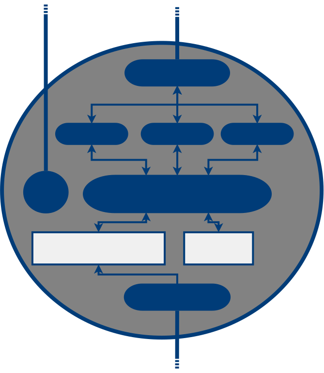

MIDAS WORKSHOP
Finnish Institute of Occupational Health
2.2.2015
All workshop material available at
github.com/jtorniainen/midas_workshop
Outline
- Background and overview
- Components of a MIDAS network
- Installation
- How to use MIDAS
- The MIDAS API
- Building a MIDAS node -- case example
- Supporting tools
- Contributing to MIDAS
- Future
- Q & A
M |
I |
D |
A |
S |
MODULAR |
INTEGRATED |
DISTRIBUTED |
ANALYSIS |
SYSTEM |
1. INTRODUCTION
MIDAS (Modular Integrated Distributed Analysis System) is a system for online analysis of physiologic signals or other streaming time series and easy integration into online machine learning frameworks.
1.1 ANALYZING PHYSIOLOGIC SIGNALS
1.2 QUICK FACTS ABOUT MIDAS
- Modular and distributed
- Open source (MIT license)
- Easy to add functionality
- Easy to integrate with web applications
- Uses open standard communication protocols
- Written in Python
1.3 COMPETITON
OpenViBE Renard, Yann, et al. "OpenViBE: an open-source software platform to design, test, and use brain-computer interfaces in real and virtual environments" Presence: teleoperators and virtual environments, 2010 |
SSIWagner, Johannes, et al. "The Social Signal Interpretation Framework (SSI) for Real Time Signal Processing and Recognition" INTERSPEECH, 2011 |
BCILABC Kothe, S Makeig. "BCILAB: A platform for brain-computer interface development" Journal of Neural Engineering, 2013 |
HOW IS MIDAS DIFFERENT?
- SLIM: Only bare bones, no clutter
- MODULAR: Add functionality as needed
- DISTRIBUTED: Runs everywhere (locally, over network, on hand-held, in a cloud)
2. MIDAS ARCHITECTURE
2.1 MIDAS ARCHITECTURE
2.2 MIDAS ARCHITECTURE
2.3 COMMUNICATION PROTOCOLS IN MIDAS
3. INSTALLATION
Installing MIDAS is super easy!
- Install prerequisites
- Install MIDAS
Remember to use Python 3!
3.1 INSTALLATION EASY WAY
$ wget https://raw.githubusercontent.com/bwrc/midas/master/requirements.txt $ pip3 install -r requirements.txt $ pip3 install git+https://github.com/bwrc/midas/
4. BASIC USE
- Start streaming the data
- Start the node(s)
- Start the dispatcher
- Access nodes through the MIDAS API
4.1 STREAMERS
- Transmit raw data over lab streaming layer
- Some sensor devices have built-in LSL support (Neuroelectrics Enobio)
- For some devices you can find LSL drivers from http://code.google.com/p/labstreaminglayer/
- If no streamer exist it must be made manually (not difficult)
4.2 STARTING MIDAS
5 THE MIDAS API
Full reference accessible from wiki
github.com/bwrc/midas/wiki/API
Below are some examples how to use the API
5.2 CALLING MIDAS
Python
import requests
r = requests.get("localhost:8080/example_node/metric/metric_a:ch1/5")R
library('RCurl')
r <- getURL("localhost:8080/example_node/metric/metric_a:ch1/5")MATLAB
r = urlread('localhost:8080/example_node/metric/metric_a:ch1/5');6. BUILDING A MIDAS NODE
6.1 THE DATA
In this example we will be using simulated electrocardiogram (ECG) data.
The simulator (and other utilities) available at:
github.com/bwrc/lsltools
but requires:
physionet.org/physiotools/ecgsyn
in order to work!
6.2 SUMMARY OF TERMINOLOGY
- ECG: Electrocardiogram
- RR: Interval between two R-peaks (in milliseconds)
- IBI: Vector of RR intervals
- Heart rate: Temporal average of the IBI vector (often expressed as beats-per-minute or BPM)
6.3 NODES
6.3 NODES
6.4 DATA CONTAINERS
|  |
|
6.5 ANALYSIS FUNCTIONS
| Nodes in the MIDAS framework have two types of analysis functions: metrics and processes |
6.6 METRIC FUNCTION
- y = f(x)
- Calculates 'a metric' using data as input
- Input data is specified when the request is made by the client
- Return value can be a scalar or a vector/array
- Can be a method of the Node-class or an external function
6.6 METRIC FUNCTION
- The first positional argument of the metric function always contains the data
- The incoming data is wrapped inside a dict:
6.7 PROCESS
- Automatically calculate values from the primary data at set intervals
- Runs in a separate process
- Pushes calculated values into secondary data buffer
- Must be a method of the Node-class
6.8 OUR ECG-NODE SPECIFICATIONS
Goal: Be able to calculate average heart rate of N last seconds
- Process for automatically calculating inter-beat intervals
- Metric function for calculating average heart rate from the IBI vector
6.9 DISPATCHER

Photo courtesy Orange County Archives
6.10 DISPATCHER IN A NUTSHELL
The MIDAS dispatcher is basically an HTTP-server, that receives incoming requests from clients and forwards these to the nodes.6.10 DISPATCHER IN A NUTSHELL
- Make connections in the network easier
- Clients only need to communicate with the dispatcher
- No need to know the entire topology of the network
6.12 MIDAS API
- Clients can access metrics functions and data through the dispatcher using HTTP-requests
- Returned values are wrapped in JSON
- Full API available here: bit.ly/1AgKbqh
{
"ecgnode" : {
"address" : "tcp://10.40.3.53:5021",
"id" : "01",
"name" : "ecgnode",
"status" : "online",
"type" : "ECG"
}
}
{
"ECG" : "raw ECG",
"ibi" : "interbeat intervals"
}
6.13 PUTTING IT ALL TOGETHER
- Dispatcher and nodes must be configured before the network is started
- Easiest to do using configuration files
- Follows standard INI-file structure
[dispatcher] port = 8080 node_list = ecgnode ip = localhost n_threads = 5 run_pubsub_proxy = False [ecg] nodename = ecgnode nodetype = ECG nodeid = 01 nodedesc = Real-time IBI node primary_node = True port_frontend = 5021 port_backend = 5022 port_publisher = 5023 run_publisher = False n_workers = 3 n_channels = 1 channel_names = ECG channel_descriptions = raw ECG sampling_rate = 256 buffer_size_s = 30 lsl_stream_name = ecg_data secondary_data = True n_channels_secondary = 1 buffer_size_secondary = 30 channel_names_secondary = ibi channel_descriptions_secondary = IBI vector
FULL LIST OF CONFIGURATION OPTIONS
github.com/bwrc/midas/wiki/Configuring-the-node
github.com/bwrc/midas/wiki/Configuring-the-dispatcher
6.14 USING MIDAS
Our toy example: Control the speed of a Snake-game using the heart rate of the player.
All we need to do now is to add a periodical request for...
127.0.0.1:8080/ecgnode/metric/median_bpm:ibi/5
...and map the return value to frame rate.
6.15 ASSUMPTIONS
- Heart rate will be between 40 - 120 beats-per-minute
- Snake speed should be between 10 - 50 frames-per-second
7. SUPPORTING TOOLS
lsltools-package is geared for working with the lab streaming layer
github.com/bwrc/lsltools
7.1 LSLTOOLS

7.2 CONTENTS

8. CONTRIBUTING
github.com/bwrc/midas
9. FUTURE
Mobile Applications: Move experiments out of the lab
Internet of Things: Utilize wearable health technology